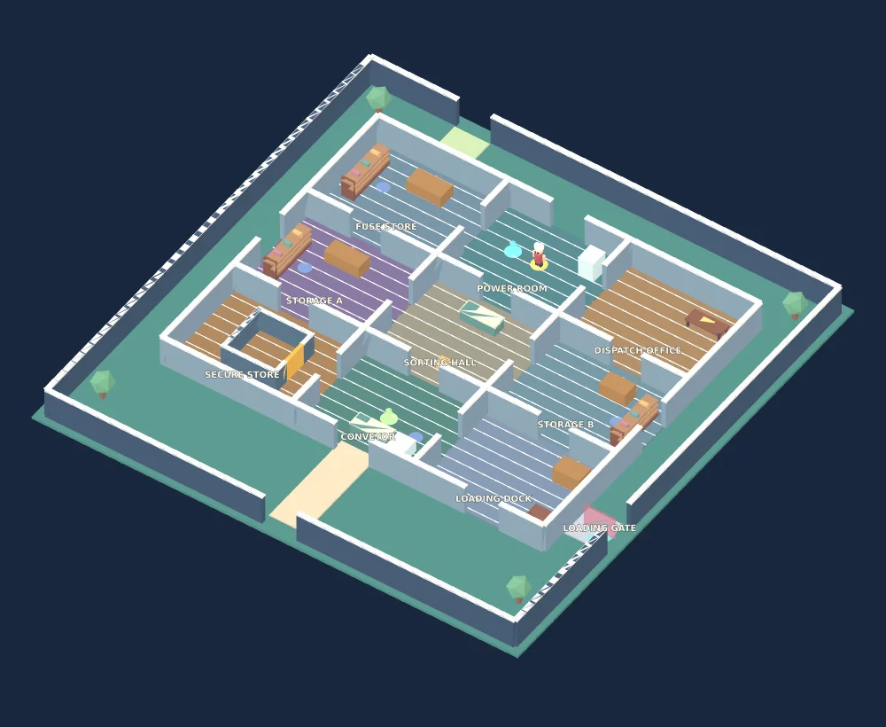

Read the symbols on the dispatch board in the north-east office. Tell your teammate the order, or remember it in solo mode. Enter the symbols at the power-room panel.
SOLO / ONLINE · 2–12 PLAYERS
THE WAREHOUSE HEIST.
Three connected puzzles. Six minutes. One hungry chef.
Read clues, carry cargo, rescue your friends and escape through the loading gate.

The overview uses the real level layout. Tap a puzzle to see its route.
Operate the shutter lever. A teammate can hold it open while you take the fuse. In solo mode it stays open for 18 seconds. Install the fuse in the power room.
Match the cargo symbol on the dispatch board. Pick up that crate, carry it to the conveyor and hold to dispatch. Then escape through the east loading gate.
STAY TOGETHER. STAY QUIET.
Running, wrong symbols and machines attract the chef. Blue circles mark hiding places. In co-op, hold the action button beside a caught teammate to rescue them; they also get free after 12 seconds. Solved tasks stay completed after a catch.
Your points save to your named player. Active warehouse co-op players earn 50 escape points, plus 10 for each task they finish and 5 per rescue (up to 3). Solo escapes earn 80 points. Use PLAYER on the home page to keep your recovery code.